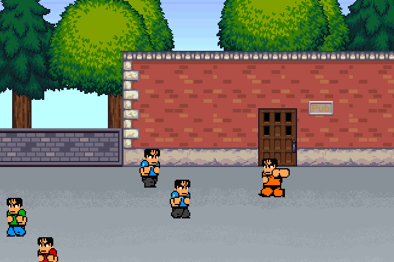
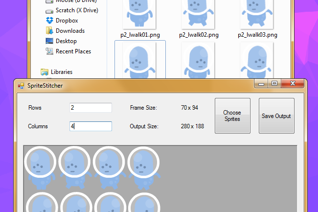
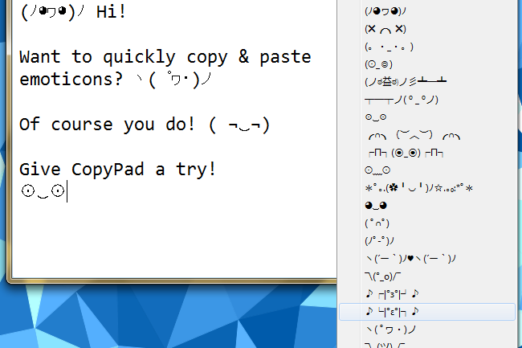
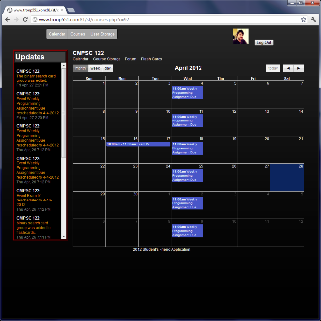
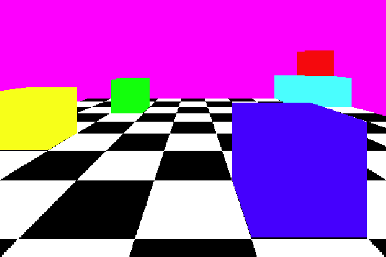

<!DOCTYPE html>
<!--
      ____                _ __  __                                    _
     |  _ \              | |  \/  |                                  | |
     | |_) |_ __ __ _  __| | \  / | __ _ ___  ___  _ __    _ __   ___| |_
     |  _ <| '__/ _` |/ _` | |\/| |/ _` / __|/ _ \| '_ \  | '_ \ / _ \ __|
     | |_) | | | (_| | (_| | |  | | (_| \__ \ (_) | | | |_| | | |  __/ |_
     |____/|_|  \__,_|\__,_|_|  |_|\__,_|___/\___/|_| |_(_)_| |_|\___|\__|

This page's source is available at https://github.com/DeadlyBrad42/bradmason.net
-->

<html>
<head>

  <!-- Meta data -->
  <meta charset="UTF-8" />
  <meta name="author" content="Brad Mason" />
  <meta name="description" content="Brad Mason, Software Engineer & Indie Gamedev" />
  <meta name="robots" content="ALL" />

  <title>Brad Mason</title>

  <!-- Stylesheets -->
  <link rel="stylesheet" href="styles/portfolio.css" title="Style" type="text/css" media="screen" />
  <link rel="stylesheet" href="http://fonts.googleapis.com/css?family=Open+Sans" type="text/css" media="screen" />

  <!-- Favicon -->
  <link rel="icon" href="assets/img/favicon.ico" type="image/x-icon" />

  <!-- Google Analytics code -->
  <script>
    (function(i,s,o,g,r,a,m){i['GoogleAnalyticsObject']=r;i[r]=i[r]||function(){
    (i[r].q=i[r].q||[]).push(arguments)},i[r].l=1*new Date();a=s.createElement(o),
    m=s.getElementsByTagName(o)[0];a.async=1;a.src=g;m.parentNode.insertBefore(a,m)
    })(window,document,'script','//www.google-analytics.com/analytics.js','ga');
    ga('create', 'UA-2725384-2', 'auto');

    window.gaLog = function(page){ga('send', 'pageview', page);};
  </script>

  <!-- JavaScript -->
  <script src="scripts/lib/jquery.min.js" type="text/JavaScript"></script>
  <script src="scripts/lib/sammy.min.js" type="text/JavaScript"></script>
  <script src="scripts/page.js" type="text/JavaScript"></script>

</head>
<body id="page-top">


<div id="wrapper">

  <aside id="meta">
    <header id="me">
      <h1><a href="/">Brad Mason</a></h1>
      <div class="avatar-wrapper">
        <div class="avatar-circle">
          
        </div>
      </div>
    </header>
    <ul id="nav-list">
      <li><a href="/#about">About</a></li>
      <li><a href="/#games">Games</a></li>
      <li><a href="/#projects">Projects</a></li>
    </ul>
    <ul id="social">
      <li class="twitter"><a href="http://twitter.com/DeadlyBrad42" title=" Twitter" target="_blank">Twitter</a></li>
      <li class="github"><a href="https://github.com/DeadlyBrad42" title="Github" target="_blank">GitHub</a></li>
      <li class="tumblr"><a href="http://codemoosey.com/" title="Blog" target="_blank">Blog</a></li>
    </ul>
  </aside>

  <section id="content">
  </section>

</div>

<script id="about" type="text/html">
  <h2>About</h2>
  <p>I'm Brad Mason, a software developer located in <a href="http://maps.google.com/maps?q=pittsburgh,+pa&amp;z=12">Pittsburgh</a>. I work at <a href="http://www.acatar.com/">Acatar</a>, a small company that believes it can change online education in a big way.</p>
  <p>I spend a lot of my spare time <a href="/#games">making games</a> and <a href="/#projects">building other projects</a>, both because I enjoy expanding my technical knowledge and because I enjoy the act of creating to add something new and interesting to the world.</p>
  <ul class="btn-group">
    <li class="email"><a href="mailto:BradTMason@gmail.com" class="btn btn-email" target="_blank">Email</a></li>
    <li class="resume"><a href="resume.pdf" class="btn btn-resume" target="_blank">R&eacute;sum&eacute;</a></li>
  </ul>
</script>

<script id="games" type="text/html">
  <h2>Games</h2>
  <ul class="showcase-list">
    <li id="game-PrisonBreak">
      <span class="proj-img"></span>
      <h3>Prison Break</h3>
      <time datetime="2012-12">December 2012</time>
      <div class="tagline">A game made in a single weekend!</div>
      <div class="explanation">
        <p>A game built in a single weekend for the <a href="http://www.ludumdare.com/compo/about-ludum-dare/">Ludum Dare</a> competion. I learned a lot (mostly about scope creep, haha) and still managed to have a game at the end of it all.</p>
      </div>
      <ul class="btn-group">
        <li><a href="http://www.ludumdare.com/compo/ludum-dare-25/?action=preview&uid=7004" class="btn btn-site">View LD Entry</a></li>
        <li><a href="http://codemoosey.com/post/38209960309/finished-my-entry-for-ludum-dare-the-game-is" class="btn btn-source">View Blog Post</a></li>
      </ul>
    </li>
  </ul>
</script>

<script id="projects" type="text/html">
  <h2>Projects</h2>
  <ul class="showcase-list">
    <li id="projects-SpriteStitcher">
      <span class="proj-img"></span>
      <h3>SpriteStitcher</h3>
      <time datetime="09-2014">September 2014</time>
      <div class="tagline">A game-dev tool that builds a spritesheet out of single-frame images</div>
      <div class="explanation">
        <p>A quickly-made gamedev tool for stitching together individual animation frames into a spritesheet.</p>
      </div>
      <ul class="btn-group">
        <li><a href="https://github.com/DeadlyBrad42/SpriteStitcher" class="btn btn-source">More Info &amp; Source</a></li>
      </ul>
    </li>
    <li id="projects-CopyPad">
      <span class="proj-img"></span>
      <h3>CopyPad</h3>
      <time datetime="09-2012">September 2012</time>
      <div class="tagline">Quickly copy and paste emoticons from your system tray!</div>
      <div class="explanation">
        <p>CopyPad allows the user to select pre-defined emoticons to add to their clipboard, allowing them to quickly paste the emoticon into any appliation.</p>
      </div>
      <ul class="btn-group">
        <li><a href="https://github.com/DeadlyBrad42/CopyPad-Windows" class="btn btn-source">View Source</a></li>
        <li><a href="http://codemoosey.com/post/24733225040/ever-wish-you-could-easily-copy-and-paste" class="btn btn-site">View Blog Post</a></li>
      </ul>
    </li>
    <li id="project-Students_Friend">
      <span class="proj-img"></span>
      <h3>Student's Friend</h3>
      <time datetime="04-2012">April 2012</time>
      <div class="tagline">A course management system for instructors and students</div>
      <div class="explanation">
        <p>My PSU Senior Project, Student's Friend was all-inclusive project that took me and my teammates through designing a system, implementing it, and documenting all of its features. The system ran on a <acronym title="Linux, Apache, MySQL, and PHP">LAMP</acronym> stack, and used JavaScript/jQuery for AJAX and stylized effects.</p>
      </div>
      <ul class="btn-group">
        <li><a href="https://github.com/DeadlyBrad42/Student-s-Friend" class="btn btn-source">More Info &amp; Source</a></li>
      </ul>
    </li>
    <li id="projects-Pixel_Pipeline">
      <span class="proj-img"></span>
      <h3>Pixel Pipeline</h3>
      <time datetime="2007">~2007</time>
      <div class="tagline">A prototype raytracing program written in C++</div>
      <div class="explanation">
        <p>Pixel Pipeline is a simple 3D raytracer capable of rendering scenes made of cubes represented by a three dimensional array. I never quite got the rendering code perfect, but making bitmap images in code always felt pretty cool!</p>
      </div>
      <ul class="btn-group">
        <li><a href="https://github.com/DeadlyBrad42/Pixel-Pipeline" class="btn btn-source">More Info &amp; Source</a></li>
      </ul>
    </li>
  </ul>
</script>


</body>
</html>
